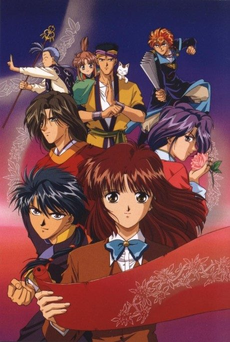

Fushigi Yugi: The Mysterious Play
ふしぎ遊戯
After the anime, read the manga from Volume 15.
7.1AniList score
—Animeter, no votes yet
52episodes
Rate it or report where you stopped
Anime finished. Where does the manga pick up?
Start at Volume15
The 52-episode anime leaves out the manga's final four volumes, so start at volume 15. Those last volumes are adapted in the second OVA series, not the TV anime.
11418 end
Season 1Start reading here